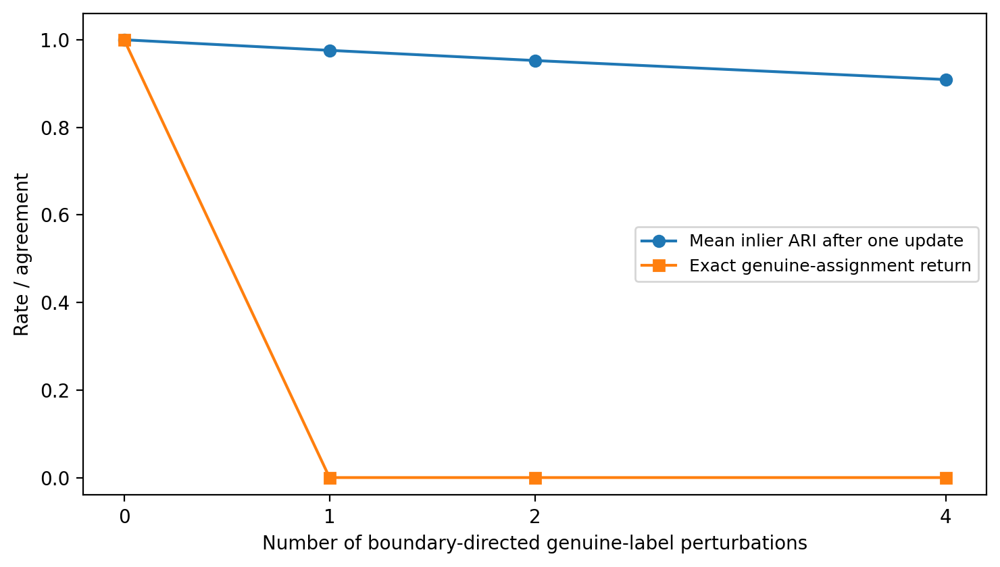
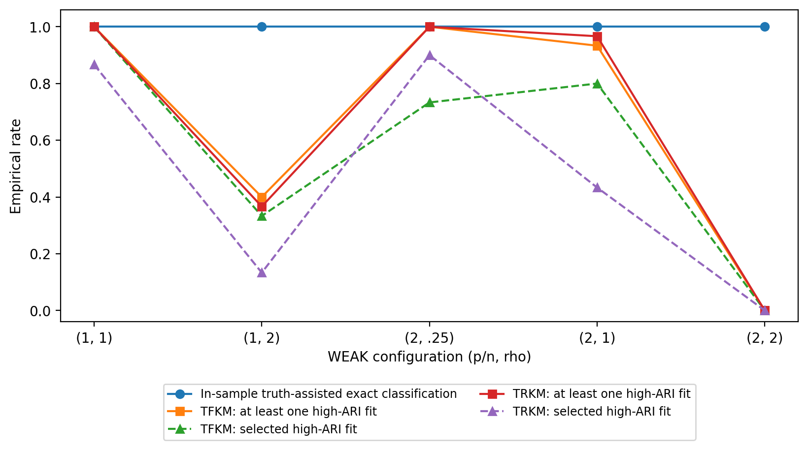
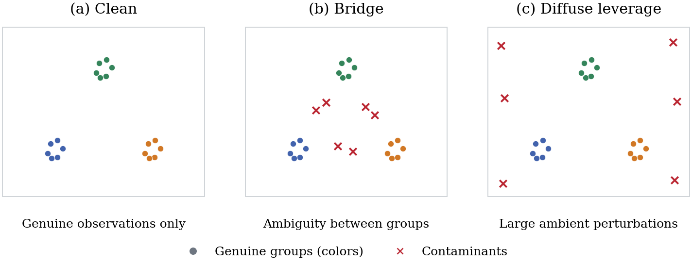

CSDA submission saved-result replication. No estimator was refitted.
| Object | Status | Input_level |
|---|---|---|
| Main Tables 1-2 | EXPOSITORY; NOT NUMERICAL | theory/method exposition |
| Main Table 3 | REPRODUCED | 2460 original method-unit evaluations |
| Main Table 4 | REPRODUCED | unit-level mechanism endpoints from original saved evaluations |
| Main Tables 5-6 / Supplement S5-S6 | REPRODUCED FROM AGGREGATES | no banking microdata |
| Supplement Tables S1-S3 | REPRODUCED | unit-level WEAK / group / rank diagnostics |
| Supplement Table S4 | REPRODUCED | FIXED_all_results.csv: 32 data sets / 192 fits; checked against eight workers and three original summaries |
| Figure 1 | REGENERATED FROM ORIGINAL SCRIPT | deterministic conceptual schematic |
| Figures 2-3 | NUMERICAL REPRODUCTION | new rendering, same underlying plotted quantities |
262 checks passed. Manuscript display values verified. Full details: checks.csv.
| Method | N | Structure_exact_count | Action_correct_count | Joint_correct_count | Exact_rg | Trim_decision_accuracy | Joint_correct | ARI_at_truth_parameters | Best_ARI_at_true_alpha |
|---|---|---|---|---|---|---|---|---|---|
| TFKM | 1230 | 694 | 842 | 662 | 0.564228 | 0.684553 | 0.538211 | 0.949824 | 0.984254 |
| TRKM | 1230 | 881 | 1207 | 866 | 0.71626 | 0.981301 | 0.704065 | 0.929599 | 0.976517 |
| perturb_count | N | Mean_inlier_ARI | Exact_genuine_assignment_return |
|---|---|---|---|
| 0 | 2460 | 1 | 1 |
| 1 | 2460 | 0.97583 | 0 |
| 2 | 2460 | 0.952599 | 0 |
| 4 | 2460 | 0.90912 | 0 |
| panel | contamination | g0 | N | Separated | Median_empirical_gain_ratio |
|---|---|---|---|---|---|
| MAIN | bridge | 4 | 270 | 1 | 40.7849 |
| MAIN | clean | 4 | 270 | 1 | 42.4533 |
| MAIN | leverage | 4 | 270 | 1 | 40.7753 |
| STRUCTURE | bridge | 3 | 30 | 1 | 51.9976 |
| STRUCTURE | bridge | 5 | 60 | 1 | 25.1396 |
| STRUCTURE | clean | 3 | 30 | 1 | 51.4007 |
| STRUCTURE | clean | 5 | 60 | 1 | 26.1358 |
| STRUCTURE | leverage | 3 | 30 | 1 | 51.4347 |
| STRUCTURE | leverage | 5 | 60 | 1 | 24.6049 |
| WEAK_DELTA7 | leverage | 4 | 150 | 1 | 19.3349 |
| r0 | g0 | N | Median_empirical_Weyl_ratio | Weyl_pass | Exact_midpoint_rank |
|---|---|---|---|---|---|
| 2 | 3 | 90 | 1.57363 | 1 | 1 |
| 3 | 4 | 960 | 1.21861 | 0.588542 | 1 |
| 3 | 5 | 90 | 1.31356 | 1 | 1 |
| 4 | 5 | 90 | 1.01866 | 0.566667 | 1 |
| method | p_over_n | rho | N | Median_Gspec | Median_GPeff | Available | Selected | Projected_truth_assisted_exact |
|---|---|---|---|---|---|---|---|---|
| TFKM | 1 | 1 | 30 | 0.851072 | 0.0529391 | 1 | 1 | 1 |
| TFKM | 1 | 2 | 30 | 0.850584 | 0.0558762 | 0.4 | 0.333333 | 1 |
| TFKM | 2 | 0.25 | 30 | 0.849126 | 0.184351 | 1 | 0.733333 | 1 |
| TFKM | 2 | 1 | 30 | 0.850279 | 0.416672 | 0.933333 | 0.8 | 1 |
| TFKM | 2 | 2 | 30 | 0.850545 | 0.284008 | 0 | 0 | 1 |
| TRKM | 1 | 1 | 30 | 1.55638 | 0.0669355 | 1 | 0.866667 | 1 |
| TRKM | 1 | 2 | 30 | 1.44398 | 0.0731827 | 0.366667 | 0.133333 | 1 |
| TRKM | 2 | 0.25 | 30 | 1.62274 | 0.185771 | 1 | 0.9 | 1 |
| TRKM | 2 | 1 | 30 | 1.36513 | 0.418104 | 0.966667 | 0.433333 | 1 |
| TRKM | 2 | 2 | 30 | 1.2044 | 0.284846 | 0 | 0 | 1 |
| method | p_over_n | rho | N | Median_Gspec | Median_GPeff | Available | Selected | Projected_truth_assisted_exact |
|---|---|---|---|---|---|---|---|---|
| TFKM | 1 | 1 | 30 | 0.851072 | 0.0529391 | 1 | 1 | 1 |
| TFKM | 1 | 2 | 30 | 0.850584 | 0.0558762 | 0.4 | 0.333333 | 1 |
| TFKM | 2 | 0.25 | 30 | 0.849126 | 0.184351 | 1 | 0.733333 | 1 |
| TFKM | 2 | 1 | 30 | 0.850279 | 0.416672 | 0.933333 | 0.8 | 1 |
| TFKM | 2 | 2 | 30 | 0.850545 | 0.284008 | 0 | 0 | 1 |
| TRKM | 1 | 1 | 30 | 1.55638 | 0.0669355 | 1 | 0.866667 | 1 |
| TRKM | 1 | 2 | 30 | 1.44398 | 0.0731827 | 0.366667 | 0.133333 | 1 |
| TRKM | 2 | 0.25 | 30 | 1.62274 | 0.185771 | 1 | 0.9 | 1 |
| TRKM | 2 | 1 | 30 | 1.36513 | 0.418104 | 0.966667 | 0.433333 | 1 |
| TRKM | 2 | 2 | 30 | 1.2044 | 0.284846 | 0 | 0 | 1 |
| Method | N | AUC_Gspec_available |
|---|---|---|
| TFKM | 150 | 0.6012 |
| TRKM | 150 | 0.9004 |
| Mechanism | Method | Count | N | Rate | Status |
|---|---|---|---|---|---|
| Genuine labels at reference state | TFKM | 1230 | 1230 | 1 | RECOMPUTED_FROM_UNIT_RESULTS |
| Genuine labels and mask | TFKM | 1180 | 1230 | 0.95935 | RECOMPUTED_FROM_UNIT_RESULTS |
| In-sample projected classification | TFKM | 1228 | 1230 | 0.998374 | RECOMPUTED_FROM_UNIT_RESULTS |
| Genuine labels at reference state | TRKM | 1230 | 1230 | 1 | RECOMPUTED_FROM_UNIT_RESULTS |
| Genuine labels and mask | TRKM | 1181 | 1230 | 0.960163 | RECOMPUTED_FROM_UNIT_RESULTS |
| In-sample projected classification | TRKM | 1230 | 1230 | 1 | RECOMPUTED_FROM_UNIT_RESULTS |
| Radial leverage datasets | TRKM | 510 | 510 | 1 | RECOMPUTED_FROM_UNIT_RESULTS |
| Radial non-leverage positives | TRKM | 2 | 720 | 0.00277778 | RECOMPUTED_FROM_UNIT_RESULTS |
| First crossing | both | 1230 | 1230 | 1 | RECOMPUTED_FROM_UNIT_RESULTS |
| Empirical-reference midpoint rank | both | 1230 | 1230 | 1 | RECOMPUTED_FROM_UNIT_RESULTS |
| method | N | Materialized_fits | Ambiguous_outcomes |
|---|---|---|---|
| TFKM | 1230 | 130 | 2 |
| TRKM | 1230 | 479 | 55 |
| Representation | N_retained | ARI | Squared_subspace_overlap | Principal_angle_degrees | Input_level |
|---|---|---|---|---|---|
| ratios | 291 | 0.827491 | 0.000256227 | 89.0828 | ARI from counts; angle from saved aggregate overlap |
| log_levels | 273 | -0.00281538 | 0.00151169 | 87.7718 | ARI from counts; angle from saved aggregate overlap |
| TFKM_cluster | n_total | n_TRKM_trimmed | TRKM_retained |
|---|---|---|---|
| 1 | 328 | 44 | 284 |
| 2 | 8 | 3 | 5 |
| 3 | 27 | 25 | 2 |
| TRKM_cluster | n_total | n_TFKM_trimmed | TFKM_retained |
|---|---|---|---|
| 1 | 70 | 69 | 1 |
| 2 | 293 | 21 | 272 |
| Representation | Method | Trimming | Alpha | Rank | Groups | Partition | Group_sizes | Trimmed |
|---|---|---|---|---|---|---|---|---|
| ratios | TFKM | None | NaN | 2 | 3 | descriptive | 328/8/27 | 0 |
| ratios | TRKM | Positive | 0.2 | 1 | 2 | selected | 5/286 | 72 |
| log_levels | TFKM | Positive | 0.25 | 1 | 2 | selected | 169/104 | 90 |
| log_levels | TRKM | None | NaN | 1 | 2 | descriptive | 70/293 | 0 |
| Representation | Method | Component | Score_size_correlation | Input_level |
|---|---|---|---|---|
| ratios | TFKM | 1 | -0.229262 | saved aggregate |
| ratios | TFKM | 2 | -0.119361 | saved aggregate |
| ratios | TRKM | 1 | 0.225006 | saved aggregate |
| log_levels | TRKM | 1 | -0.644586 | saved aggregate |
| method | N | Mean_ARI | Median_ARI | Mean_seconds |
|---|---|---|---|---|
| TKM | 32 | 0.978223 | 1 | 0.524433 |
| PCA-TKM | 32 | 0.973697 | 1 | 0.100944 |
| ROBPCA-TKM | 32 | 0.985119 | 1 | 0.129415 |
| TCLUST | 32 | 0.977898 | 1 | 17.2032 |
| REG-HD-TFKM | 32 | 0.983641 | 1 | 29.8213 |
| REG-HD-TRKM | 32 | 0.983418 | 1 | 27.2804 |
| method | n | mean_ari_inliers_full | min_ari_inliers_full | mean_ari_inliers_retained | mean_trim_f1 | outlier_set_exact_rate | mean_false_trim_rate | mean_masking_rate | mean_subspace_projection_distance | mean_subspace_overlap | mean_principal_angle_degrees | mean_maximum_principal_angle_degrees | mean_centroid_nrmse_observed | mean_centroid_nrmse_latent_aligned | mean_runtime_seconds |
|---|---|---|---|---|---|---|---|---|---|---|---|---|---|---|---|
| PCA_TKM | 32 | 0.973697 | 0.630585 | 0.988165 | 0.90625 | 0.75 | 0.0104167 | 0.09375 | 1.03179 | 0.53324 | 42.3684 | 48.6389 | 0.0310958 | 0.380728 | 0.100944 |
| RPCA_TKM | 32 | 0.985119 | 0.92079 | 1 | 0.903125 | 0.65625 | 0.0107639 | 0.096875 | 0.212272 | 0.976064 | 7.62172 | 8.12379 | 0.0216328 | 0.0141775 | 0.129415 |
| TCLUST | 32 | 0.977898 | 0.883642 | 1 | 0.859375 | 0.75 | 0.015625 | 0.140625 | NaN | NaN | NaN | NaN | 0.0178654 | NaN | 17.2032 |
| TFKM_V2_HIER4 | 32 | 0.983641 | 0.915287 | 1 | 0.894792 | 0.75 | 0.0116898 | 0.105208 | 1.22957 | 0.449631 | 48.4712 | 50.747 | 0.0142259 | 0.367456 | 29.8213 |
| TKM | 32 | 0.978223 | 0.883642 | 1 | 0.861458 | 0.75 | 0.0153935 | 0.138542 | NaN | NaN | NaN | NaN | 0.0176781 | NaN | 0.524433 |
| TRKM_RVCV | 32 | 0.983418 | 0.911728 | 1 | 0.89375 | 0.75 | 0.0118056 | 0.10625 | 1.22714 | 0.450902 | 48.3549 | 50.4483 | 0.014411 | 0.365945 | 27.2804 |
| method | scenario_id | n | mean_ari_inliers_full | min_ari_inliers_full | mean_ari_inliers_retained | mean_trim_f1 | outlier_set_exact_rate | mean_false_trim_rate | mean_masking_rate | mean_subspace_projection_distance | mean_subspace_overlap | mean_principal_angle_degrees | mean_maximum_principal_angle_degrees | mean_centroid_nrmse_observed | mean_centroid_nrmse_latent_aligned | mean_runtime_seconds |
|---|---|---|---|---|---|---|---|---|---|---|---|---|---|---|---|---|
| PCA_TKM | 33001 | 8 | 1 | 1 | 1 | 1 | 1 | 0 | 0 | 0.3704 | 0.931266 | 15.1605 | 15.9787 | 0 | 0.0282569 | 0.133572 |
| PCA_TKM | 33004 | 8 | 0.942126 | 0.921493 | 1 | 0.625 | 0 | 0.0416667 | 0.375 | 0.232469 | 0.981974 | 7.69658 | 8.2867 | 0.0538137 | 0.0234333 | 0.0999691 |
| PCA_TKM | 33005 | 8 | 1 | 1 | 1 | 1 | 1 | 0 | 0 | 1.9199 | 0.0783282 | 76.0609 | 87.2212 | 0 | 0.778345 | 0.112274 |
| PCA_TKM | 33007 | 8 | 0.952662 | 0.630585 | 0.952662 | 1 | 1 | 0 | 0 | 1.60438 | 0.141391 | 70.5555 | 83.069 | 0.0705696 | 0.692879 | 0.0579599 |
| RPCA_TKM | 33001 | 8 | 1 | 1 | 1 | 1 | 1 | 0 | 0 | 0.369237 | 0.931714 | 15.108 | 15.9828 | 0 | 0.0282386 | 0.139837 |
| RPCA_TKM | 33004 | 8 | 0.942232 | 0.92079 | 1 | 0.625 | 0 | 0.0416667 | 0.375 | 0.234866 | 0.981595 | 7.77519 | 8.37487 | 0.0533865 | 0.0226719 | 0.0771911 |
| RPCA_TKM | 33005 | 8 | 0.998245 | 0.995201 | 1 | 0.9875 | 0.625 | 0.00138889 | 0.0125 | 0.111517 | 0.99689 | 3.19229 | 3.3966 | 0.0331448 | 0.00237421 | 0.243411 |
| RPCA_TKM | 33007 | 8 | 1 | 1 | 1 | 1 | 1 | 0 | 0 | 0.13347 | 0.994058 | 4.41144 | 4.74093 | 0 | 0.00342548 | 0.0572218 |
| TCLUST | 33001 | 8 | 1 | 1 | 1 | 1 | 1 | 0 | 0 | NaN | NaN | NaN | NaN | 0 | NaN | 12.5927 |
| TCLUST | 33004 | 8 | 0.911592 | 0.883642 | 1 | 0.4375 | 0 | 0.0625 | 0.5625 | NaN | NaN | NaN | NaN | 0.0714617 | NaN | 22.4867 |
| TCLUST | 33005 | 8 | 1 | 1 | 1 | 1 | 1 | 0 | 0 | NaN | NaN | NaN | NaN | 0 | NaN | 23.812 |
| TCLUST | 33007 | 8 | 1 | 1 | 1 | 1 | 1 | 0 | 0 | NaN | NaN | NaN | NaN | 0 | NaN | 9.92159 |
| TFKM_V2_HIER4 | 33001 | 8 | 1 | 1 | 1 | 1 | 1 | 0 | 0 | 0.831541 | 0.653807 | 36.0133 | 37.622 | 0 | 0.161943 | 5.84176 |
| TFKM_V2_HIER4 | 33004 | 8 | 0.934564 | 0.915287 | 1 | 0.579167 | 0 | 0.0467593 | 0.420833 | 1.58903 | 0.158263 | 66.6957 | 69.8755 | 0.0569036 | 0.579744 | 11.2217 |
| TFKM_V2_HIER4 | 33005 | 8 | 1 | 1 | 1 | 1 | 1 | 0 | 0 | 1.88503 | 0.111654 | 70.5369 | 72.4614 | 0 | 0.662497 | 93.9124 |
| TFKM_V2_HIER4 | 33007 | 8 | 1 | 1 | 1 | 1 | 1 | 0 | 0 | 0.612684 | 0.874801 | 20.6389 | 23.0291 | 0 | 0.065642 | 8.30929 |
| TKM | 33001 | 8 | 1 | 1 | 1 | 1 | 1 | 0 | 0 | NaN | NaN | NaN | NaN | 0 | NaN | 0.937391 |
| TKM | 33004 | 8 | 0.912893 | 0.883642 | 1 | 0.445833 | 0 | 0.0615741 | 0.554167 | NaN | NaN | NaN | NaN | 0.0707125 | NaN | 0.496988 |
| TKM | 33005 | 8 | 1 | 1 | 1 | 1 | 1 | 0 | 0 | NaN | NaN | NaN | NaN | 0 | NaN | 0.441321 |
| TKM | 33007 | 8 | 1 | 1 | 1 | 1 | 1 | 0 | 0 | NaN | NaN | NaN | NaN | 0 | NaN | 0.222031 |
| TRKM_RVCV | 33001 | 8 | 1 | 1 | 1 | 1 | 1 | 0 | 0 | 0.82939 | 0.655598 | 35.9053 | 37.5091 | 0 | 0.160751 | 5.12304 |
| TRKM_RVCV | 33004 | 8 | 0.933672 | 0.911728 | 1 | 0.575 | 0 | 0.0472222 | 0.425 | 1.59193 | 0.155167 | 66.9061 | 69.4256 | 0.057644 | 0.581989 | 11.95 |
| TRKM_RVCV | 33005 | 8 | 1 | 1 | 1 | 1 | 1 | 0 | 0 | 1.88107 | 0.115385 | 70.1983 | 72.1098 | 0 | 0.656892 | 83.3991 |
| TRKM_RVCV | 33007 | 8 | 1 | 1 | 1 | 1 | 1 | 0 | 0 | 0.606153 | 0.877457 | 20.41 | 22.7489 | 0 | 0.0641463 | 8.64966 |
| method | truth_regime | n | mean_ari_inliers_full | min_ari_inliers_full | mean_ari_inliers_retained | mean_trim_f1 | outlier_set_exact_rate | mean_false_trim_rate | mean_masking_rate | mean_subspace_projection_distance | mean_subspace_overlap | mean_principal_angle_degrees | mean_maximum_principal_angle_degrees | mean_centroid_nrmse_observed | mean_centroid_nrmse_latent_aligned | mean_runtime_seconds |
|---|---|---|---|---|---|---|---|---|---|---|---|---|---|---|---|---|
| PCA_TKM | BRIDGE_AMBIGUOUS | 8 | 0.942126 | 0.921493 | 1 | 0.625 | 0 | 0.0416667 | 0.375 | 0.232469 | 0.981974 | 7.69658 | 8.2867 | 0.0538137 | 0.0234333 | 0.0999691 |
| PCA_TKM | CLEAN | 8 | 1 | 1 | 1 | 1 | 1 | 0 | 0 | 0.3704 | 0.931266 | 15.1605 | 15.9787 | 0 | 0.0282569 | 0.133572 |
| PCA_TKM | LEVERAGE | 16 | 0.976331 | 0.630585 | 0.976331 | 1 | 1 | 0 | 0 | 1.76214 | 0.10986 | 73.3082 | 85.1451 | 0.0352848 | 0.735612 | 0.0851168 |
| RPCA_TKM | BRIDGE_AMBIGUOUS | 8 | 0.942232 | 0.92079 | 1 | 0.625 | 0 | 0.0416667 | 0.375 | 0.234866 | 0.981595 | 7.77519 | 8.37487 | 0.0533865 | 0.0226719 | 0.0771911 |
| RPCA_TKM | CLEAN | 8 | 1 | 1 | 1 | 1 | 1 | 0 | 0 | 0.369237 | 0.931714 | 15.108 | 15.9828 | 0 | 0.0282386 | 0.139837 |
| RPCA_TKM | LEVERAGE | 16 | 0.999123 | 0.995201 | 1 | 0.99375 | 0.8125 | 0.000694444 | 0.00625 | 0.122493 | 0.995474 | 3.80186 | 4.06877 | 0.0165724 | 0.00289984 | 0.150316 |
| TCLUST | BRIDGE_AMBIGUOUS | 8 | 0.911592 | 0.883642 | 1 | 0.4375 | 0 | 0.0625 | 0.5625 | NaN | NaN | NaN | NaN | 0.0714617 | NaN | 22.4867 |
| TCLUST | CLEAN | 8 | 1 | 1 | 1 | 1 | 1 | 0 | 0 | NaN | NaN | NaN | NaN | 0 | NaN | 12.5927 |
| TCLUST | LEVERAGE | 16 | 1 | 1 | 1 | 1 | 1 | 0 | 0 | NaN | NaN | NaN | NaN | 0 | NaN | 16.8668 |
| TFKM_V2_HIER4 | BRIDGE_AMBIGUOUS | 8 | 0.934564 | 0.915287 | 1 | 0.579167 | 0 | 0.0467593 | 0.420833 | 1.58903 | 0.158263 | 66.6957 | 69.8755 | 0.0569036 | 0.579744 | 11.2217 |
| TFKM_V2_HIER4 | CLEAN | 8 | 1 | 1 | 1 | 1 | 1 | 0 | 0 | 0.831541 | 0.653807 | 36.0133 | 37.622 | 0 | 0.161943 | 5.84176 |
| TFKM_V2_HIER4 | LEVERAGE | 16 | 1 | 1 | 1 | 1 | 1 | 0 | 0 | 1.24886 | 0.493227 | 45.5879 | 47.7453 | 0 | 0.364069 | 51.1109 |
| TKM | BRIDGE_AMBIGUOUS | 8 | 0.912893 | 0.883642 | 1 | 0.445833 | 0 | 0.0615741 | 0.554167 | NaN | NaN | NaN | NaN | 0.0707125 | NaN | 0.496988 |
| TKM | CLEAN | 8 | 1 | 1 | 1 | 1 | 1 | 0 | 0 | NaN | NaN | NaN | NaN | 0 | NaN | 0.937391 |
| TKM | LEVERAGE | 16 | 1 | 1 | 1 | 1 | 1 | 0 | 0 | NaN | NaN | NaN | NaN | 0 | NaN | 0.331676 |
| TRKM_RVCV | BRIDGE_AMBIGUOUS | 8 | 0.933672 | 0.911728 | 1 | 0.575 | 0 | 0.0472222 | 0.425 | 1.59193 | 0.155167 | 66.9061 | 69.4256 | 0.057644 | 0.581989 | 11.95 |
| TRKM_RVCV | CLEAN | 8 | 1 | 1 | 1 | 1 | 1 | 0 | 0 | 0.82939 | 0.655598 | 35.9053 | 37.5091 | 0 | 0.160751 | 5.12304 |
| TRKM_RVCV | LEVERAGE | 16 | 1 | 1 | 1 | 1 | 1 | 0 | 0 | 1.24361 | 0.496421 | 45.3041 | 47.4293 | 0 | 0.360519 | 46.0244 |



Original input file names and legacy column names are retained for provenance. See documentation/DATA_DICTIONARY.md for interpretation.